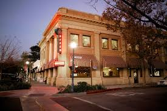

Restaurant Description
We have been making gourmet pizza since 1982. Located in the heart of downtown Zuni Pueblo. We not only have a full menu of pizza's, we also have burgers for those who would like to change up once in a while. We also do catering for crowds of all sizes. For bigger crowds all we ask for is advance notices, this will allow us to get ready in a timely manner and provide you the customer with the best possible experience!